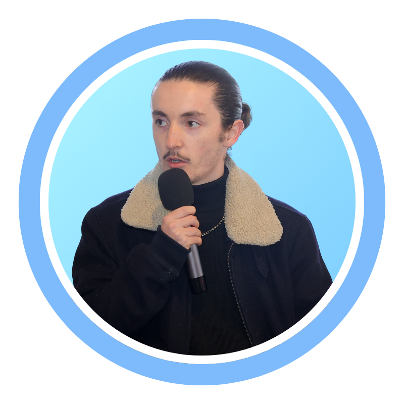

L'IA évolue chaque jour.
Toi aussi tu peux en profiter —
si tu sais où regarder.
La plupart des entrepreneurs entendent parler d'IA.
Peu savent quoi en faire concrètement.
Le Cockpit, c'est l'endroit où les décideurs qui agissent partagent ce qui marche vraiment —
outils, stratégies, automatisations, retours terrain.
1 Dose / Jour
Un outil, une méthode, un retour d'expérience. Distillé. Actionnable. Pas de bruit inutile.
Communauté Active
Des entrepreneurs et décideurs qui testent, partagent, progressent. Pas de spectateurs passifs.
1 Live / Semaine
Session en direct pour décortiquer ce qui bouge. Questions, démos, cas réels en direct.

Fondateur de PRCZ
Noé PORCHIER-CIZAIRE
Consultant, formateur et conférencier en intelligence artificielle.
Fort d'un ancrage solide en cybersécurité, j'ai fait le choix d'accompagner les organisations à intégrer l'IA de manière structurée et durable.
Ma conviction : avant de parler d'outils, il faut poser les bonnes questions. C'est pourquoi j'interviens d'abord sur la dimension stratégique — comprendre le pourquoi, identifier les vrais enjeux — avant d'aller chercher le comment.
Cette approche est au cœur de PRCZ, l'agence que j'ai fondée pour accompagner dirigeants et équipes vers une adoption de l'IA qui fait sens, qui tient dans le temps, et qui s'ancre dans les réalités métier.
Chaque semaine, mes contenus sur LinkedIn génèrent plus de 100 000 impressions. Cette exposition me permet de tester en continu ce qui résonne, ce qui questionne, ce qui déclenche. Ce sont ces apprentissages qui alimentent directement la qualité des ressources au sein du Cockpit.
Prends ta place
dans le cockpit.
Accès WhatsApp — Gratuit — Réservé aux entrepreneurs sérieux